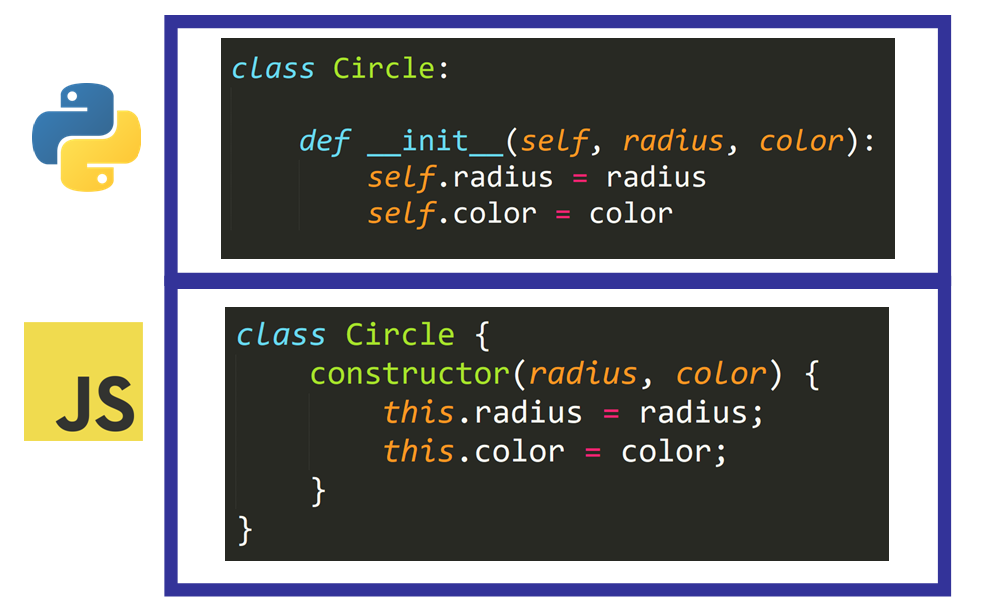

A programming language is a formal structure of rigid, inbuilt instructions used to carry out programming tasks. Code gets broken down during the compile stage from human readable languages into lower level assembly, then machine code. When comparing the speed of these languages, it's important to note I'll only be comparing languages at a higher level than assembly. There's really no point in building applications in languages at assembly level and below other than to improve the optimization of the language itself, because the amount of instructions that need to be created to complete even simple tasks becomes increasingly large. That said, any well written assembly program is going to be more performant than higher level languages that compile into it.
As you can see from the code above, most programming languages may have different syntax, but they usually share basic programming concepts like data structures, and useful inbuilt functions that should be in every language, like sorting or iterators. Once you understand one language very well, you can probably understand many more very quickly.
The obvious question is, if there's some fastest performing language, why doesn't everyone just use that? Such factors include: ease with which you can program, the speed of iteration, stability, popularity, and creative differences.